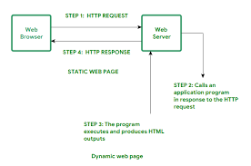
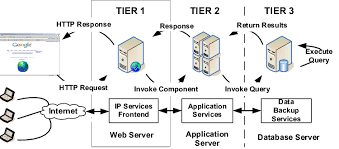

Client/Server concept

-
Client- server is a system that performs both the functions of client and server so as to promote the sharing of information between them. It allows many users to have access to the same database at the same time, and the database will store much information.With the advancement in technology, Web is becoming very much more important in our daily lives, in which virtually everything we do nowadays involves the use of web. More so, the application of Web is not limited to computers but it is opened to different kinds of intelligent digital devices, for example the mobile ones. Also, the architecture of the Web is the Client-Server model, in which as a result the communication between the client and server is the first thing we should be concerned about . Client/server system has increasingly minimized application development time by dividing functions of sharing information into both the client and server. The client is the requester while the server is the provider of service. In most client-server environment, the data processing is handled by the server, and the results are returned to the clients, which is made to speed up the rate of performance.For example, in a workstation, a printer can be attached to a computer (representing the clients) while other computers sharing from it are the servers.
-
client-server architecture, architecture of a computer network in which many clients (remote processors) request and receive service from a centralized server (host computer). Client computers provide an interface to allow a computer user to request services of the server and to display the results the server returns. Servers wait for requests to arrive from clients and then respond to them. Ideally, a server provides a standardized transparent interface to clients so that clients need not be aware of the specifics of the system (i.e., the hardware and software) that is providing the service. Clients are often situated at workstations or on personal computers, while servers are located elsewhere on the network, usually on more powerful machines. This computing model is especially effective when clients and the server each have distinct tasks that they routinely perform. In hospital data processing, for example, a client computer can be running an application program for entering patient information while the server computer is running another program that manages the database in which the information is permanently stored. Many clients can access the server’s information simultaneously, and, at the same time, a client computer can perform other tasks, such as sending e-mail. Because both client and server computers are considered independent devices, the client-server model is completely different from the old mainframe model, in which a centralized mainframe computer performed all the tasks for its associated “dumb” terminals, which merely communicated with the central mainframe.
Components of Web Application
-
All web-based database applications have three primary components: A web browser (or client), a web application server, and a database server.Web-based database applications rely on a database server, which provides the data for the application. The database server sometimes also provides business logic in the form of stored procedures. Stored procedures can offer significant performance advantages, especially in a multi-tiered architecture. In addition to database servers, other enterprise information system components include IMS databases, IBM® MQ messages, and CICS® records.The clients handle the presentation logic, which controls the way in which users interact with the application. In some cases, the client validates user-provided input. Web applications sometimes integrate Java™ applets into the client-side logic to improve the presentation layer.
Applet:A Java program that is part of a Hypertext Markup Language (HTML) page. (HTML is the standard method for presenting web data to users.) Applets work with Java-enabled browsers, such as Microsoft Internet Explorer; they are loaded when the HTML page is processed.Web application servers manage the business logic. The business logic, typically written in Java, supports multitiered applications. The web application server can manage requests from a variety of remote clients. The web application layer might include JavaServer Pages (JSP) files, Java servlets, Enterprise JavaBeans (EJB) components, or web services.
JSP:A technology that provides a consistent way to extend web server functionality and create dynamic web content. The web applications that you develop with JSP technology are server and platform independent.
Servlet:A Java program that responds to client requests and generates responses dynamically.
EJB:A component architecture for building distributed applications with the Java programming model. Server transactional components are reusable and provide portability across application servers.
Web services:Self-contained, modular applications that provide an interface between the provider and the consumer of application resources. You can read more about web services later in this information.
Overview of HTTP request and response

-
The Hypertext Transfer Protocol (HTTP) is an application-level protocol for distributed, collaborative, hypermedia information systems. This is the foundation for data communication for the World Wide Web (i.e. internet) since 1990. HTTP is a generic and stateless protocol which can be used for other purposes as well using extensions of its request methods, error codes, and headers.Basically, HTTP is a TCP/IP based communication protocol, that is used to deliver data (HTML files, image files, query results, etc.) on the World Wide Web. The default port is TCP 80, but other ports can be used as well. It provides a standardized way for computers to communicate with each other. HTTP specification specifies how clients' request data will be constructed and sent to the server, and how the servers respond to these requests.
-
There are three basic features that make HTTP a simple but powerful protocol:
HTTP is connectionless:The HTTP client, i.e., a browser initiates an HTTP request and after a request is made, the client waits for the response. The server processes the request and sends a response back after which client disconnect the connection. So client and server knows about each other during current request and response only. Further requests are made on new connection like client and server are new to each other.
HTTP is media independent:It means, any type of data can be sent by HTTP as long as both the client and the server know how to handle the data content. It is required for the client as well as the server to specify the content type using appropriate MIME-type.
HTTP is stateless: As mentioned above, HTTP is connectionless and it is a direct result of HTTP being a stateless protocol. The server and client are aware of each other only during a current request. Afterwards, both of them forget about each other. Due to this nature of the protocol, neither the client nor the browser can retain information between different requests across the web pages.
Generation of dynamic web pages
-
It is difficult to be precise about "dynamic web page beginnings" or chronology because the precise concept makes sense only after the "widespread development of web pages". HTTP has been in use since 1990, HTML, as standard, since 1996. The web browser's rise in popularity started with Mosaic in 1993. It is obvious, however, that the concept of dynamically driven websites predates the Internet, and in fact HTML. For example, in 1990, before general public use of the Internet, a dynamically driven remotely accessed menu system was implemented by Susan Biddlecomb, who was Director of Computer Support of the USC Health Care system at the University of Southern California BBS on a 16 line TBBS system with TDBS add-on.database.The introduction of JavaScript (then known as LiveScript) enabled the production of client-side dynamic web pages, with JavaScript code executed in the client's browser.[2] The letter "J" in the term AJAX originally indicated the use of JavaScript, as well as XML. With the rise of server side JavaScript processing, for example, Node.js, originally developed in 2009, JavaScript is also used to dynamically create pages on the server that are sent fully formed to clients.Execusite introduced the first dynamic website solution for the professional marketplace in June 1997. Execusite was acquired by Website Pros (now Web.com) in January 2000. During the bust cycle of the Dot-com bubble, the original Execusite founders bought back the company from Website Pros (December 2000). Execusite was later acquired by Wolters-Kluwer in December 2001 and was re-branded as CCH Site Builder.
-
A server-side dynamic web page is a web page whose construction is controlled by an application server processing server-side scripts. In server-side scripting, parameters determine how the assembly of every new web page proceeds, including the setting up of more client-side processing.
-
A client-side dynamic web page processes the web page using JavaScript running in the browser as it loads. JavaScript can interact with the page via Document Object Model, or DOM, to query page state and modify it. Even though a web page can be dynamic on the client-side, it can still be hosted on a static hosting service such as GitHub Pages or Amazon S3 as long as there isn't any server-side code included.A dynamic web page is then reloaded by the user or by a computer program to change some variable content. The updating information could come from the server, or from changes made to that page's DOM. This may or may not truncate the browsing history or create a saved version to go back to, but a dynamic web page update using AJAX technologies will neither create a page to go back to, nor truncate the web browsing history forward of the displayed page. Using AJAX, the end user gets one dynamic page managed as a single page in the web browser while the actual web content rendered on that page can vary. The AJAX engine sits only on the browser requesting parts of its DOM, the DOM, for its client, from an application server. /P>
Application Servers
-
The term was originally used when discussing early client–server systems to differentiate servers that contain application logic SQL services and middleware servers as distinct from other types of data-servers.Currently, despite the fact that web-browsers have become ubiquitous and are typically the client for end-users in many application deployment strategies, browser-based web apps represent only a subset of application-server technologies. An application server is a server that hosts applications.Application server frameworks are software frameworks for building application servers.
An application server framework provides both facilities to create web applications and a server environment to run them.An application server framework contains a comprehensive service layer model. It includes a set of components accessible to the software developer through a standard API defined for the platform itself. For Web applications, these components usually run in the same environment as their web server(s), and their main job is to support the construction of dynamic pages. However, many application servers do more than generate web pages: they implement services such as clustering, fail-over, and load-balancing, so developers can focus on implementing the business logic.In the case of Java application servers, the server behaves like an extended virtual machine for running applications, transparently handling connections to the database on one side, and, often, connections to the Web client on the other.Other uses of the term may refer to the services that a server makes available or the computer hardware on which the services run.
-
Application servers are system software upon which web applications or desktop applications run.Application servers consist of:
- web server connectors
- computer programming languages
- runtime libraries
- database connectors
- the administration code needed to deploy, configure, manage, and connect these components on a web host.
An application server runs behind[citation needed] a web Server (e.g. Apache or Microsoft Internet Information Services (IIS)) and (almost always) in front of an SQL[citation needed] database (e.g. PostgreSQL, MySQL, or Oracle). Web applications are computer code which run atop application servers and are written in the language(s) the application server supports and call the runtime libraries and components the application server offers.Many application servers exist. The choice impacts the cost, performance, reliability, scalability, and maintainability of a web application.Proprietary application servers provide system services in a well-defined but proprietary manner. The application developers develop programs according to the specification of the application server. Dependence on a particular vendor is the drawback of this approach.An opposite but analogous case is the Java EE platform. Java EE application servers provide system services in a well-defined, open, industry standard. The application developers develop programs according to the Java EE specification and not according to the application server. A Java EE application developed according to Java EE standard can be deployed in any Java EE application server making it vendor-independent.
Web Security
-
Every system used in real time will be having some security threats. Internet has not been exception for it. From as early as 1980s there has been occurrence of several different types of security attacks with Internet being their major target. Internet happens to be main target due to type and amount of information it stores and advancements in computer networks which makes it very easy for accessing the same. Also, at the same time limitations/design flaws in Internet design, programming languages etc. make attack techniques to evolve from day to day. Due to such evolution of new attack mechanisms, at present, we have a big list of different attacks. Further, motivations for making such attacks range from just having fun to sabotaging critical & specific infrastructures at national level. Hence, in this context, it is very necessary and useful to know about latest trends in security attacks. In this connection this paper provides a brief survey of latest security attacks on web. This paper also provides a summarized comparison of discussed attacks against chosen important parameters. In addition, an observational data about attacks via Emails over a period of time is also presented. The paper concludes by mentioning the need of such surveys and research opportunities in this area.
-
The Internet is a dangerous place! With great regularity, we hear about websites becoming unavailable due to denial of service attacks, or displaying modified (and often damaging) information on their homepages. In other high-profile cases, millions of passwords, email addresses, and credit card details have been leaked into the public domain, exposing website users to both personal embarrassment and financial risk.The purpose of website security is to prevent these (or any) sorts of attacks. The more formal definition of website security is the act/practice of protecting websites from unauthorized access, use, modification, destruction, or disruption.Effective website security requires design effort across the whole of the website: in your web application, the configuration of the web server, your policies for creating and renewing passwords, and the client-side code. While all that sounds very ominous, the good news is that if you're using a server-side web framework, it will almost certainly enable "by default" robust and well-thought-out defense mechanisms against a number of the more common attacks. Other attacks can be mitigated through your web server configuration, for example by enabling HTTPS. Finally, there are publicly available vulnerability scanner tools that can help you find out if you've made any obvious mistakes.
-
Among the various forms of malware, botnets are emerging as the most serious threat against cyber-security as they provide a distributed platform for several illegal activities such as launching distributed denial of service attacks against critical targets, malware dissemination, phishing, and click fraud. The defining characteristic of botnets is the use of command and control channels through which they can be updated and directed. Recently, botnet detection has been an interesting research topic related to cyber-threat and cyber-crime prevention. This paper is a survey of botnet and botnet detection. The survey clarifies botnet phenomenon and discusses botnet detection techniques. This survey classifies botnet detection techniques into four classes: signature-based, anomaly-based, DNS-based, and mining-base. It summarizes botnet detection techniques in each class and provides a brief comparison of botnet detection techniques.
-
Considering information is the most valuable asset of any organization, information security is one of the most important areas for every business and individual. Looking at the big picture, approximately 86% of all websites had a serious vulnerability in 2015.1 Given this statistic, security measures such as passwords, data protection, firewalls, antivirus, OS and mobile encryption, network monitoring and education are imperative aspects to consider protecting the organizations most important assets.Due to the large volume of competition in the world, there are constant information security threats that endanger the well-being of an organization. In order to have manageability, confidentiality of information, and security; organizations are implementing a variety of measures to protect themselves against potential attacks and information loss.